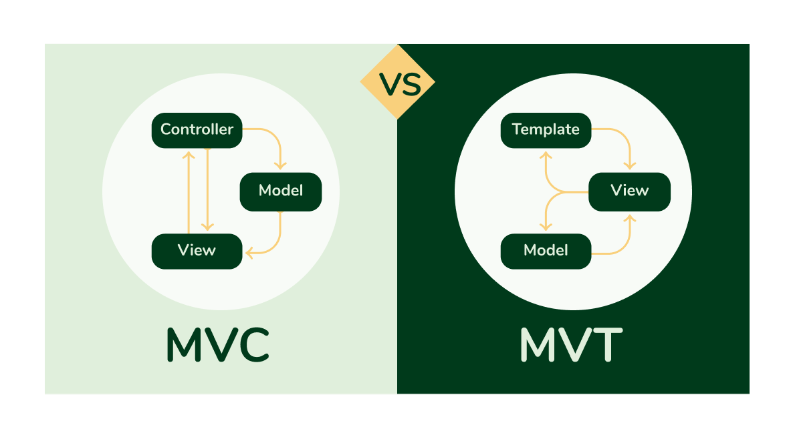

Django 入門
Django は Python で書かれたオープンソースの Web アプリケーションフレームワークです。
Django を使用すれば、わずかなコードで、Python のプログラマーは本番サイトに必要な大部分の機能を簡単に実装でき、さらにフル機能の Web サービスを開発することができます。
Django はフルスタック開発に必要なツールを提供します。データベース ORM、テンプレートエンジン、ルーティングシステム、ユーザー認証などが含まれ、重複コードを大幅に削減します。
Django の哲学:
- DRY（Don't Repeat Yourself）:重複コードを避け、再利用を推奨します（例：テンプレート継承、モデル継承）。
- 設定より規約:デフォルトで合理的な設定を提供し（例：Admin インターフェースを自動生成）、意思決定のコストを減らします。
- 迅速な開発:プロトタイプから本番環境まで効率的に進められます。
Django は MVC（Model-View-Controller）アーキテクチャに従いますが、Django ではより一般的に MTV（Model-Template-View）と呼ばれます。

内蔵機能
| 機能 | 説明 |
|---|---|
| Admin 管理画面 | 管理画面を自動生成し、CRUD ロジックを手動で書く必要がありません。 |
| ORM | Python クラスでデータベースを操作でき、SQL を書く必要がありません。 |
| フォーム処理 | 組み込みのフォーム検証を備え、CSRF 攻撃を防ぎます。 |
| ユーザー認証 | ログイン、登録、権限管理を提供（django.contrib.auth）。 |
| ルーティングシステム | URL マッピングは柔軟で、正規表現をサポートします。 |
| キャッシュ機構 | Memcached、Redis などのバックエンドをサポートします。 |
中核的な特徴
- 迅速な開発：Django は認証、管理画面、フォーム処理など数多くの内蔵機能を提供し、開発者は基盤実装ではなくビジネスロジックに集中できます。
- 自動化管理画面：簡単なモデル定義だけで、強力な管理画面を生成でき、追加・削除・変更・検索（CRUD）をサポートします。
- ORM データベースマッピング：Django は ORM（Object-Relational Mapping）を内蔵しており、開発者は SQL を書かずに Python クラスでデータベースとやり取りできます。
- 強力な URL ルーティング：正規表現を使用して URL を柔軟に定義し、ページルーティングを簡単に実現できます。
- テンプレートエンジン：強力なテンプレートシステムを内蔵し、条件分岐やループ処理をサポートして、HTML ページのレンダリングに便利です。
- 国際化サポート：Django は多言語国際化をサポートしており、グローバルアプリケーションに最適です。
- 高いセキュリティ：SQL インジェクション、XSS 攻撃、CSRF 攻撃などの防止を含む複数のセキュリティ保護対策を内蔵しています。
- 豊富なコミュニティと拡張機能：Django REST framework、Django CMS など数多くのオープンソースのサードパーティライブラリがあり、機能を素早く拡張できます。
MVC と MTVモデル

MVC (Model-View-Controller)
-
Model（モデル）：データベースとのやり取りを処理し、データ構造とビジネスロジックを定義します。
-
View（ビュー）：データの表示を担当し、ユーザーが見る HTML ページを生成します。
-
Controller（コントローラー）：ユーザーリクエストを受け取り、Model を呼び出してデータを処理し、結果を View に渡してページをレンダリングします。
フロー：
-
ユーザーが Controller にリクエストを送信します。
-
Controller がロジックを処理し、Model を呼び出してデータを取得します。
-
Controller がデータを View に渡します。
-
View がレンダリングして HTML ページをユーザーに返します。
MVT（Model-Template-View）—— Django の実装方式
Django では採用されているMVT設計パターンは、MVC に似ていますが、いくつか違いがあります：
-
Model（モデル）：データベースとやり取りし、データの作成、読み取り、更新、削除を処理します。
-
Template（テンプレート）：ページのレンダリングを担当し、最終的な HTML コンテンツを生成します。
-
View（ビュー）：Django の View はコントローラーの役割により近く、リクエストを受け取り、どのテンプレートとデータを使用するかを決定します。
フロー：
-
ユーザーが URL にアクセスすると、リクエストは Django の
urls.pyURL マッピングによって対応する View にルーティングされます。 -
View がビジネスロジックを処理し、Model を呼び出してデータを取得します。
-
View がデータを Template に渡します。
-
Template が HTML をレンダリングし、最終的にユーザーに返します。
Django の適用シナリオ
Django に適したプロジェクト:
- ✅ コンテンツ管理システム（CMS）（例：ニュースサイト、ブログ）
- ✅ ソーシャルプラットフォーム（ユーザーシステム、タイムライン投稿）
- ✅ 電子商取引サイト（注文管理、決済統合）
- ✅ API バックエンド（Django REST framework と組み合わせる）
適さないシナリオ:
- ❌ 超高性能が要求されるリアルタイムシステム（例：高頻度取引プラットフォーム、Go または Rust を推奨）
- ❌ 超軽量なマイクロサービス（Flask や FastAPI を検討可能）
Django vs 他のフレームワーク
| フレームワーク | 特徴 |
|---|---|
| Flask | 軽量で柔軟、小規模プロジェクトやマイクロサービスに適しています。 |
| FastAPI | 非同期サポートが強力で、高性能 API 開発に適しています。 |
| Ruby on Rails | Django に似ていますが、Ruby 言語を使用します。 |
| Laravel | PHP エコシステムの MVC フレームワークで、機能は Django に似ています。 |
Django の利点：
- 「すぐに使える」：追加のプラグインをインストールしなくても完全な機能を実現できます。
- セキュリティ：SQL インジェクション、XSS、CSRF などの一般的な攻撃を自動的に防ぎます。
- アクティブなコミュニティ：豊富なサードパーティライブラリ（例：Django REST framework、Django CMS）。